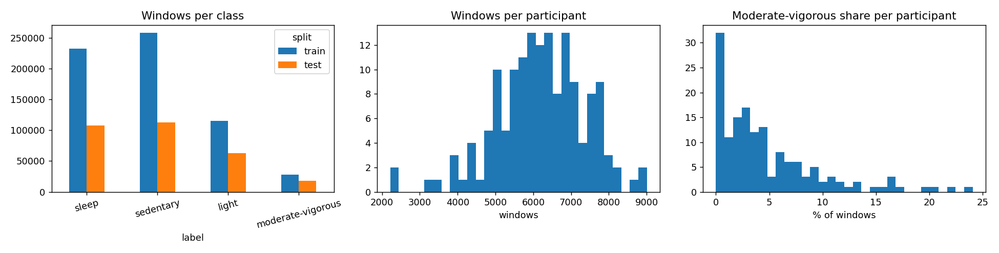
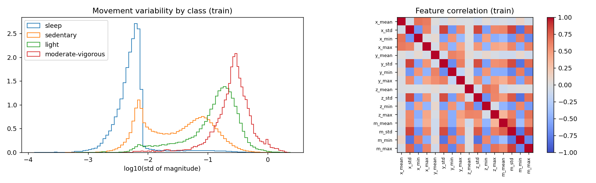
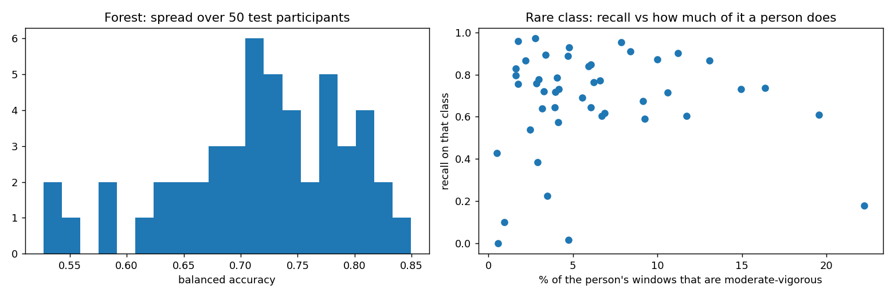

The question and the unit of analysis
One row of our data is one non-overlapping 10-second window of one person's wrist acceleration (1,000 samples at 100 Hz), described by 16 numbers. The target is the activity class that covers most of that window. The model predicts each window on its own, using only that window's 16 features: no participant ID, no age or sex, no neighbouring windows.
Raw signal
151 adults wore an Axivity AX3 on the wrist for about a day each: x, y, z acceleration at 100 Hz, about 152 GB in total (CAPTURE-24).
10-second windows
We cut the signal into non-overlapping 10 s windows and keep the 934,776 that have a label from wearable-camera images or sleep diaries.
16 features
Mean, standard deviation, minimum and maximum of x, y, z and of the magnitude √(x²+y²+z²).
New people only
Train on participants P001–P101, test once on the 50 people P102–P151 the models never saw. Every choice before that used cross-validation grouped by person.
The data
Source: CAPTURE-24 (Chan et al., Scientific Data 2024, CC BY 4.0), a free-living study in which adults wore a wrist accelerometer for about 24 hours while a wearable camera and sleep diary recorded what they were doing. We used the Kaggle copy of CAPTURE-24 (kooaslansefat/capture-24-human-activity-recognition).
Size and key variables
| Participants | 151 (101 train, 50 test) |
| Raw data | x, y, z in g at 100 Hz · about 152 GB of CSV |
| Labelled 10 s windows | 934,776 (633,425 train · 301,351 test) |
| Windows per person | median 6,259 (range 2,214–9,009) |
| Labels | over 200 fine-grained annotations → 4 classes via the dataset's label:Walmsley2020 column |
| Metadata | age group and sex (used only for the group audit, never as model input) |
Class balance (windows)
| Class | Train | Test |
|---|---|---|
| sleep | 232,341 (36.7%) | 107,890 (35.8%) |
| sedentary | 258,283 (40.8%) | 112,804 (37.4%) |
| light | 115,160 (18.2%) | 62,850 (20.9%) |
| moderate-vigorous | 27,641 (4.4%) | 17,807 (5.9%) |
Moderate-vigorous is rare, so plain accuracy would hide failures on it. That is why we use macro-F1 and balanced class weights.
Quality issues we found
What the features show (training people only)
Median movement variability (m_std, the standard deviation of the magnitude) rises steadily with intensity: sleep 0.005, sedentary 0.033, light 0.154, moderate-vigorous 0.277. Sleep is well separated, but sedentary overlaps both sleep (very still sitting) and light, and light overlaps moderate-vigorous. So we expected most mistakes between neighbouring intensity levels.


Preprocessing choices, and why
All of this runs in the preprocessing notebook, which turns 152 GB of raw CSV into a 60 MB feature table. The modelling choices that guard against leakage are in the next section.
| Choice | What we did | Why |
|---|---|---|
| Window | 10 s, non-overlapping (1,000 samples) | Same as the CAPTURE-24 benchmark. Long enough to contain several steps or gestures, short enough to usually cover one activity. Non-overlapping windows avoid near-duplicate rows. |
| Window label | Most frequent label inside the window | A window that straddles two activities gets the one that covers most of it (benchmark rule). |
| Classes | 4 classes from label:Walmsley2020 | The 200+ fine labels are too sparse to learn. The 4 intensity levels are the dataset's own grouping and are used in published work. |
| Unlabelled windows | Dropped | Without a label they can neither train nor score a model. |
| Features | Mean, std, min, max of x, y, z and magnitude (16) | Cheap, interpretable and small enough for the whole dataset to fit in memory. The magnitude does not depend on how the device is rotated, and the standard deviations measure how much the wrist moves. |
| Inputs left out | No participant ID, age or sex | The model must work for people it has never seen, so it must not learn who someone is. |
| Scaling | Only for logistic regression, inside a pipeline | Trees do not need scaling. Fitting the scaler on each training fold only keeps validation and test data out of it. |
| Imbalance | class_weight="balanced" | Moderate-vigorous is 4–6% of windows; without weighting the models would mostly ignore it. |
| Tuning data | Every 10th window of each training person (63,385 rows, all 101 people) | Neighbouring windows are near-duplicates, so this keeps the variety while making grid search about 10 times faster. |
| Gap participants | Kept | Dropping them changes test macro-F1 by only 0.0002 (sensitivity check below). |
Baseline, models and evaluation
Models compared
- Majority class (baseline): always predicts the most common class, the floor any model must beat.
- Logistic regression: linear, fast, interpretable; a natural first model for 16 numeric features.
- Decision tree, depth ≤ 6: the compact model, a handful of readable threshold rules.
- Random forest: the larger model; averages many deep trees and handles non-linear interactions.
How we evaluated
- Split by person: CAPTURE-24 benchmark split, P001–P101 train, P102–P151 test. No person is in both.
- Tuning: 5-fold
GroupKFoldwith the person as the group, on training people only. - Metric: macro-F1 (every class counts equally), plus balanced accuracy, per-class recall and confusion matrices.
- Test set used once. Settings, feature budget and which model is "compact" were all chosen from cross-validation.
- Uncertainty: 1,000 bootstrap resamples of the 50 test people; model differences use paired resamples.
Tuning and overfitting (cross-validation on training people)
| Model | Grid searched | Chosen | CV macro-F1 | Train macro-F1 |
|---|---|---|---|---|
| Majority | none | none | 0.145 | 0.145 |
| Logistic regression | C ∈ {0.01, 0.1, 1, 10} | C = 10 | 0.614 | 0.623 |
| Decision tree | depth 2–6, min. leaf 0.1% of rows | depth 5 | 0.628 | 0.643 |
| Random forest | min. leaf {0.005%, 0.02%, 0.1%} × max_features {sqrt, 0.5} | sqrt, 0.02% | 0.697 | 0.831 |
| ↳ forest, smallest leaves | not chosen | 0.685 | 0.953 | |
| ↳ forest, largest leaves | not chosen | 0.679 | 0.725 |
Logistic regression barely changes with C (0.607–0.614), so regularisation is not what limits it. The tree stops improving after depth 5, so we keep the smaller tree. The forest with the smallest leaves memorises the training folds (train 0.953 vs CV 0.685); the chosen setting sits between memorising and underfitting.
Why we split by person
Same models, same training data, two ways of cross-validating. A random split puts windows from the same person in both training and validation, so a flexible model gets credit for recognising people rather than activities.
Results: how good is each model on new people?
Macro-F1 on the 50 test participants (each class counts equally). Lines are 95% intervals from resampling the 50 people, not the windows, because windows from one person are strongly correlated.
Table
Where do the mistakes go?
Pick a model. Each row is the true class and shows where its windows were predicted, so rows add up to 100%. Hover a cell for the window count.
Recall by class
Sleep is easiest (forest F1 0.900) and moderate-vigorous hardest (F1 0.546: recall 0.674 but precision 0.459, so many of its predictions are false alarms). Most errors are between neighbouring intensity levels. Logistic regression sends 32% of sedentary windows to sleep, against 11% for the tree and 9% for the forest, so non-linear thresholds matter for telling very still sitting from sleep. Test scores are slightly above cross-validation scores (forest 0.700 vs 0.697, tree 0.673 vs 0.628), probably because the final models use 10 times more training data and the test people differ; we do not read more into it.
Feature budget: how few features are enough?
Features are ranked by random-forest importance on the training people (re-ranked inside every fold). Slide to keep only the top k. The solid line is cross-validation on training people (used to pick the compact budget, with a band of ±1 standard deviation); the dashed line is the test set, shown for information only. These models are trained on the 10% tuning subsample, so at k = 16 they differ slightly from the headline models above.
Recall by class at k features (tick = all 16)
Confusion at k features
Compact versus full, side by side
Error analysis
What do the misclassified windows look like?
Most frequent confusions (random forest)
| True → predicted | Windows | Share of true class |
|---|---|---|
| sedentary → light | 20,234 | 17.9% |
| light → sedentary | 11,983 | 19.1% |
| light → moderate-vigorous | 11,196 | 17.8% |
Median movement of sedentary windows predicted as light
| Sedentary, correct | Sedentary → light | Light, correct | |
|---|---|---|---|
| m_std | 0.027 | 0.126 | 0.165 |
| m_max | 1.17 | 1.78 | 1.94 |
The sedentary windows called "light" move like light activity, not like sitting still. Sitting while gesturing, eating or fidgeting would look like this. Ten-second summaries of wrist movement cannot separate them, and camera/diary labels at that boundary are probably noisy too. A few errors are not explained by movement (for example a sedentary window with m_std 0.008 predicted as light), so wrist orientation also plays a part.
Does it work equally well for everyone?
Each dot is one test person (shuffled and unnamed). Click a dot or use the list to see that person's activity mix and how well each of their classes was recognised by the random forest.
Per-person balanced accuracy ranges from 0.53 to 0.85 (median 0.72). Most of the five lowest people do very little moderate-vigorous activity, or are mostly asleep, and balanced accuracy weights each class equally, so a few missed windows of a rare class pull them down sharply. Of the 46 people with at least 20 moderate-vigorous windows, 5 have recall below 0.3. The clearest case does 22% moderate-vigorous activity (1,383 windows), yet 76% of it was predicted as light: their vigorous activity probably moves the wrist little, which these features cannot see.

Groups
Group-level results only. With 9 to 34 people per group, these differences are descriptive, not evidence of bias.
Would more people help? And do the recording gaps matter?
Inside the training set: 20 people held out for validation, and the forest trained on 5 to 81 of the others (3 random draws each, one at 81).
Recording-gap check
Limitations
- Only 50 test people. The forest's 95% interval is 0.673–0.726, and per-person results range from 0.53 to 0.85.
- Rare class. Moderate-vigorous is 4–6% of windows and 27 of 151 people have under 0.5%. Its F1 is the lowest (0.546), and many of its predictions are false alarms.
- Simple features. 16 summary statistics lose rhythm, frequency and posture-change information. The learning curve is flat after about 40 people, so the features, not the number of people, are the main limit.
- Windows are classified one at a time. Activities follow each other in time; smoothing over neighbouring windows (as the CAPTURE-24 benchmark does with an HMM) is future work.
- Label noise. Labels come from camera images and diaries, so the sedentary/light boundary is uncertain, and about a third of windows had no label, so results describe labelled time only.
- Tuning on a subsample. Settings were tuned on every 10th window, and the forest's leaf size was given as a fraction of rows, so the final full-data forest has larger leaves than the tuned one.
- Scope. One wrist device, adults in one free-living study. Age/sex groups have 9–34 people. Results say nothing about other devices or populations, and predictions are not causal explanations.
Disclosures
- Pilot. Before the final notebook we ran one untuned pilot that looked at test scores as a feasibility check (forest macro-F1 0.707). No setting was chosen from it or from any test score.
- Noticed after testing. The feature-budget forest with all 16 features scores 0.713 on test, above the headline forest's 0.700, probably because a leaf size given as a fraction means much larger leaves on the full data. We noticed this after the test run, so we kept 0.700 as the headline and changed nothing.
All notebook figures
Reproduce, code and credits
The repository holds both notebooks with their outputs, the full result files (including cross-validation results and the exact train/test participant lists), and a README with setup and run steps.
Data: CAPTURE-24 (Chan et al., Scientific Data 11, 1135, 2024; Oxford Research Archive, DOI 10.5287/bodleian:NGx0JOMP5, CC BY 4.0), used through its Kaggle copy. The train/test split, 10 s windows and Walmsley2020 label grouping follow the CAPTURE-24 benchmark. Raw data is not re-published here, and no participant IDs or personal details are shown next to individual results on this page.
AI use: we used Claude (Anthropic) to brainstorm the project design, draft and debug code, review our outputs, suggest wording and build this website. We ran every step ourselves, checked the numbers against the notebook outputs, and can explain every step.